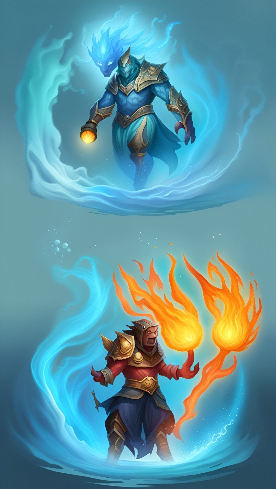

The elemental uses 1 round to manifest. You must have a sufficient amount of the element for the elemental to form a body or the spell will fail. Elementals are hostile to life and will try to kill all living creatures, starting with the summoner.
| Attributes/Skills | Air | Earth | Fire | Water |
|---|---|---|---|---|
| Strength | 1/level | 3/level | 1/level | 2/level |
| Coordination | 3/level | 1/level | 2/level | 2/level |
| Learning | 2 | 1 | 2 | 2 |
| Awareness | 2/level | 1/level | 2/level | 1/level |
| Magical Aptitude | 2/level | 2/level | 2/level | 2/level |
| “Size” | 5/level | 1/level | 1/level | 3/level |
| Weight | None | Size table x 5 | None | Size table |
| Body Points | 3/level | 3/level | 3/level | 3/level |
| Armor Points | 0 | 2/level | 0 | 0 |
| Move | 36 | 6 | 12 | 12 |
| Offensive | Push of level x 2 | 2/level | 2/level | 1(3)/level |
| Defensive | 3/level | 1/level | 2/level | 1(3)/level |
| Damage* | As Push spell | d-4+2/level | d-2+1/level | d-7+1/level |
| Hide* | 20 | 15 | 20 | 20 |
| Move Quietly* | 20 | 10 | 20 | 15 |
*The damage for elementals includes any damage bonus. Hide and move quietly is in own element. They do not need cover to hide in own element. Elementals heal 1 BP per hour of rest in own element. () The number in parenteses is in water. Air elementals : can be damaged by silver or magick weapons. An air elemental can lift 10 kg per point of strength. Earth elementals : can be damaged by any type of weapon. Fire elementals : Can be damaged by silver or magick weapons. Take 1 BP of damage per liter of water thrown on them. Magick fire heals instantly as many BP as it normally does damage. If you are within fighting range (1–2 m) of a fire elemental, you receive d–5 +1 per full 2 levels of damage per round. Water elementals : Can be damaged by silver or magick weapons. Must be in contact with the water it was summoned from. It can reach out 1/2 m per size from that water. It can scare off unintelligent life in the water. It can adjust the swimming skill of someone by 3 per level by assisting or hindering.
Casting
To cast Summon Elemental:
- Roll: O6 + SPIRIT + Attunement + Air, Earth, Fire, Summoning, Water, Ice vs DR 11
- Cost: 3 Mental Fortitude
- Time: 5 min.
- Cooldown: 6 hours
Transfer Requirements
- Receiving: Requires Air, Earth, Fire, Summoning, Water, Ice Attunement 3 or higher
- Giving: 2 weeks ritual to transfer spell ownership